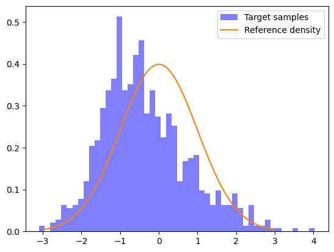

Launch this notebook on on mybinder.org:
Construct map from samples#
[1]:
import numpy as np
from scipy.optimize import minimize
from scipy.stats import norm
import matplotlib.pyplot as plt
[2]:
from mpart import *
[3]:
# sinh-arcsinh function
def sinharcsinh(z,loc,scale,skew,tail):
'''
To make skewed and/or non-Gaussian tailed test distributions
skew \in R, skew > 0 leads to positive (right tilted) skew, skew < 0 leads to negative (left tilted) skew
tail > 0, tail < 1 leads to light tails, tail > 1 leads to heavy tails.
skew = 0, tail = 1 leads to affine function x = loc + scale*z
See for more info: Jones, M. Chris, and Arthur Pewsey. "Sinh-arcsinh distributions." Biometrika 96.4 (2009): 761-780.
'''
f0 = np.sinh(tail*np.arcsinh(2))
f = (2/f0)*np.sinh(tail*(np.arcsinh(z) + skew))
x = loc + scale*f
return x
[4]:
# Make target samples
num_points = 1000
z = np.random.randn(num_points)
x = sinharcsinh(z, loc=-1, scale=1, skew=.5, tail=1)[None,:]
# x = -2 + .5*z # For Gaussian test case
[5]:
# For plotting and computing reference density
rv = norm()
t = np.linspace(-3,3,100)
rho_t = rv.pdf(t)
[6]:
# Before optimization
num_bins = 50
plt.figure()
plt.hist(x.flatten(), num_bins, facecolor='blue', alpha=0.5, density=True, label='Target samples')
plt.plot(t,rho_t,label="Reference density")
plt.legend()
plt.show()

[7]:
# Create multi-index set:
multis = np.array([[0], [1], [2], [3], [4], [5]])
# multis = np.array([[0], [1]]) # For Gaussian test case
mset = MultiIndexSet(multis)
fixed_mset = mset.fix(True)
[8]:
# Set MapOptions and make map
opts = MapOptions()
opts.basisType = BasisTypes.HermiteFunctions
#opts.basisType = BasisTypes.PhysicistHermite
monotoneMap = CreateComponent(fixed_mset, opts)
[9]:
# KL divergence objective
def objective(coeffs, monotoneMap, x, num_points):
monotoneMap.SetCoeffs(coeffs)
map_of_x = monotoneMap.Evaluate(x)
ref_logpdf_of_map_of_x = rv.logpdf(map_of_x)
log_det = monotoneMap.LogDeterminant(x)
return -np.sum(ref_logpdf_of_map_of_x + log_det)/num_points
[10]:
# Optimize
print('Starting coeffs')
print(monotoneMap.CoeffMap())
print('and error: {:.2E}'.format(objective(monotoneMap.CoeffMap(), monotoneMap, x, num_points)))
res = minimize(objective, monotoneMap.CoeffMap(), args=(monotoneMap, x, num_points), method="Nelder-Mead")
print('Final coeffs')
print(monotoneMap.CoeffMap())
print('and error: {:.2E}'.format(objective(monotoneMap.CoeffMap(), monotoneMap, x, num_points)))
Starting coeffs
[0. 0. 0. 0. 0. 0.]
and error: 1.69E+00
Final coeffs
[-0.49942924 -0.14342675 1.25435146 -0.27975832 0.31856536 -0.10715973]
and error: 1.57E+00
[11]:
# After optimization plot
map_of_x = monotoneMap.Evaluate(x)
plt.figure()
plt.hist(map_of_x.flatten(), num_bins, facecolor='blue', alpha=0.5, density=True, label='Normalized samples')
plt.plot(t,rho_t,label="Reference density")
plt.legend()
plt.show()